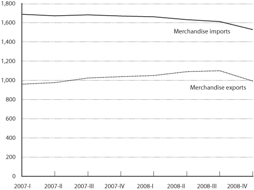

Excel | CSV | Table Version
(Billions of chained 2000 dollars)
NOTE: To compare economic changes over time, current or nominal values of currencies are adjusted for inflation. In the United States, the Bureau of Economic Analysis establishes indices to calculate changes between years. These are used to calculate real chained dollars. Annual changes in the indices are chained (multiplied) together to form a time series. Chained dollars, instead of merely reflecting inflation, capture the effect of relative changes in prices and in the composition of output. They also better reflect cyclical fluctuations in the economy.
SOURCE: U.S. Department of Transportation, Research and Innovative Technology Administration, Bureau of Transportation Statistics, based on data from U.S. Department of Commerce, Bureau of Economic Analysis, National Economic Accounts, National Incomes and Products Account, www.bea.gov/national/nipaweb/index.asp, as of March 14, 2009.